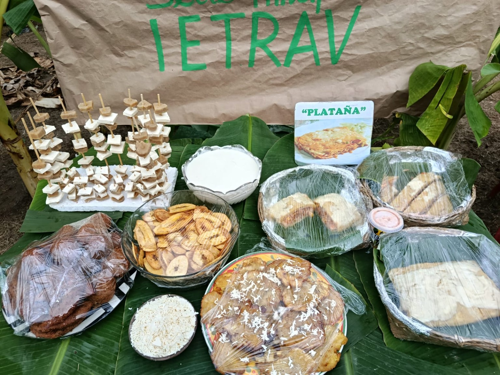
SALADO
Muestra gastronómica
Variedad de preparaciones del festival.
Una experiencia escolar interactiva inspirada en la vida de pueblo: caminos verdes, matas de plátano, música, danza, gastronomía y artesanías.
🍽️ Explorar sabores🗺️ Recorrer el puebloUna página creada alrededor de la cultura, el trabajo del campo y la creatividad de la comunidad.
El festival muestra el valor del cultivo, las matas de plátano y el trabajo de las familias que producen alimentos.
El plátano se transforma en numerosas preparaciones y se convierte en el protagonista de la muestra gastronómica.
La música, la danza, las decoraciones y las artesanías ayudan a celebrar la identidad del pueblo.
Un espacio para compartir, aprender y mostrar el sabor del campo.
El Festival del Plátano reúne gastronomía, comunidad, agricultura y expresiones culturales alrededor de un producto que está presente en la vida cotidiana.
Las fotografías que aparecen en esta página son parte del material aportado para el proyecto y permiten mostrar el ambiente real de la celebración.
Las hojas de plátano también hacen parte de la identidad visual: aparecen en mesas, paredes, puestos, empaques y decoraciones.
Cultura + Agricultura + Tradición + Gastronomía
Explora las preparaciones que aparecen en nuestras fotografías.

Variedad de preparaciones del festival.
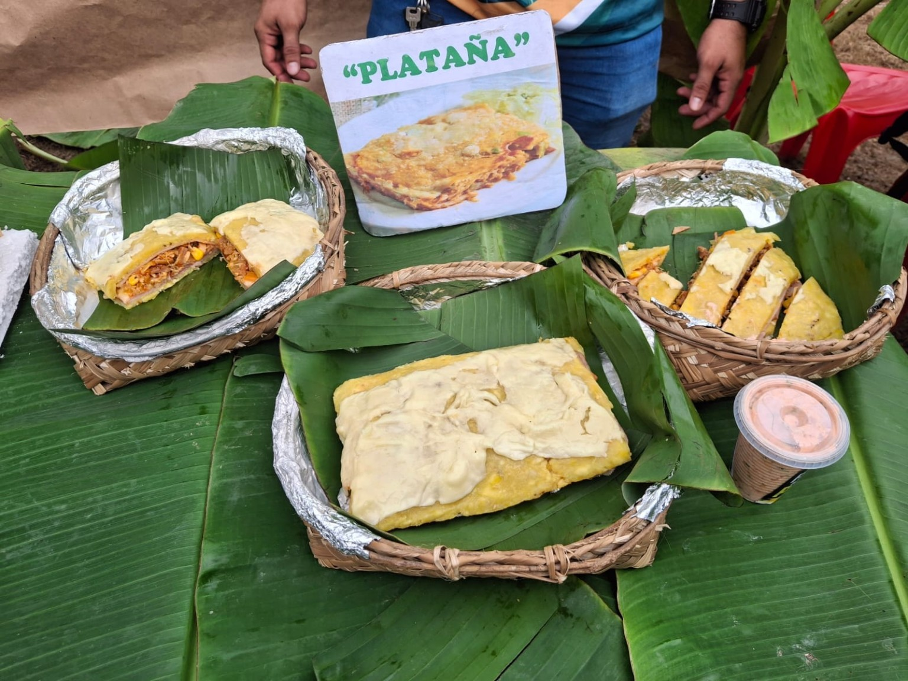
Una preparación destacada de la muestra.
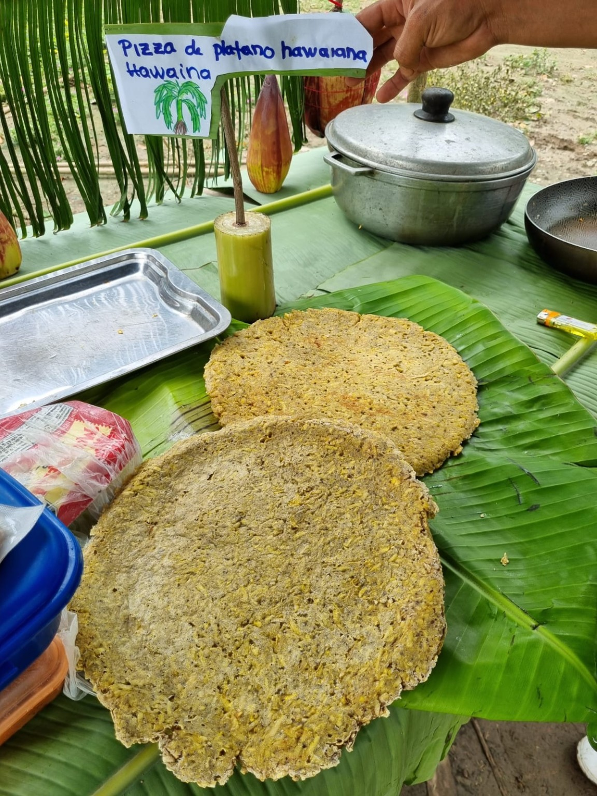
Innovación gastronómica del festival.
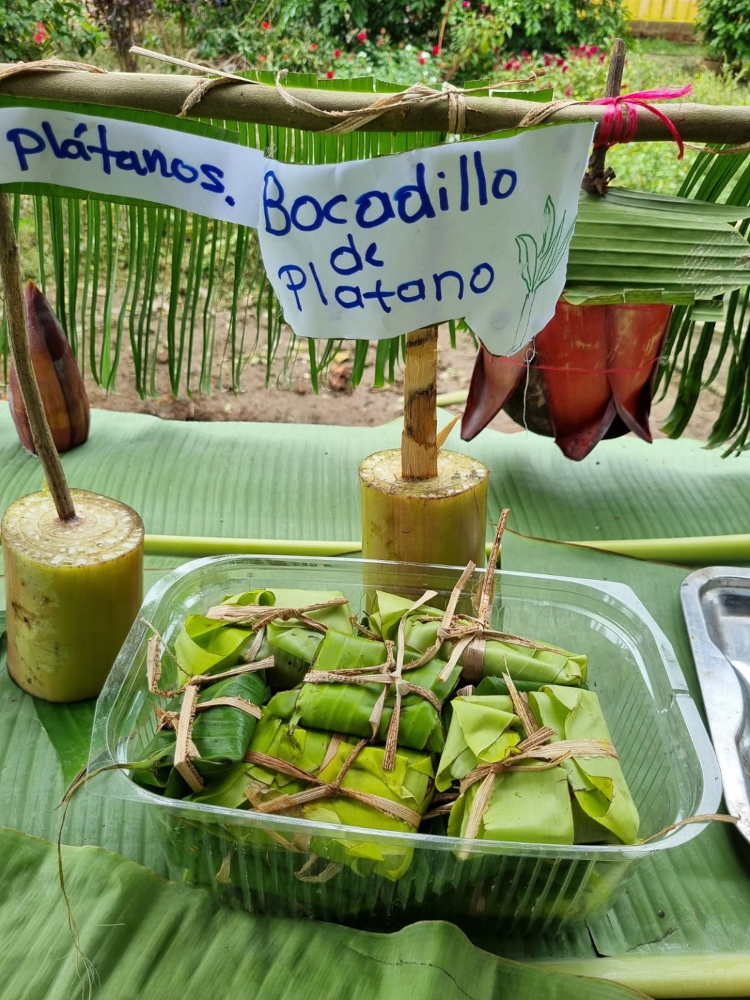
Dulce presentado de forma artesanal.
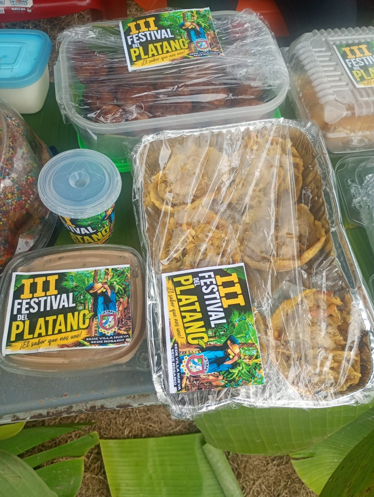
Empaques y preparaciones con identidad propia.
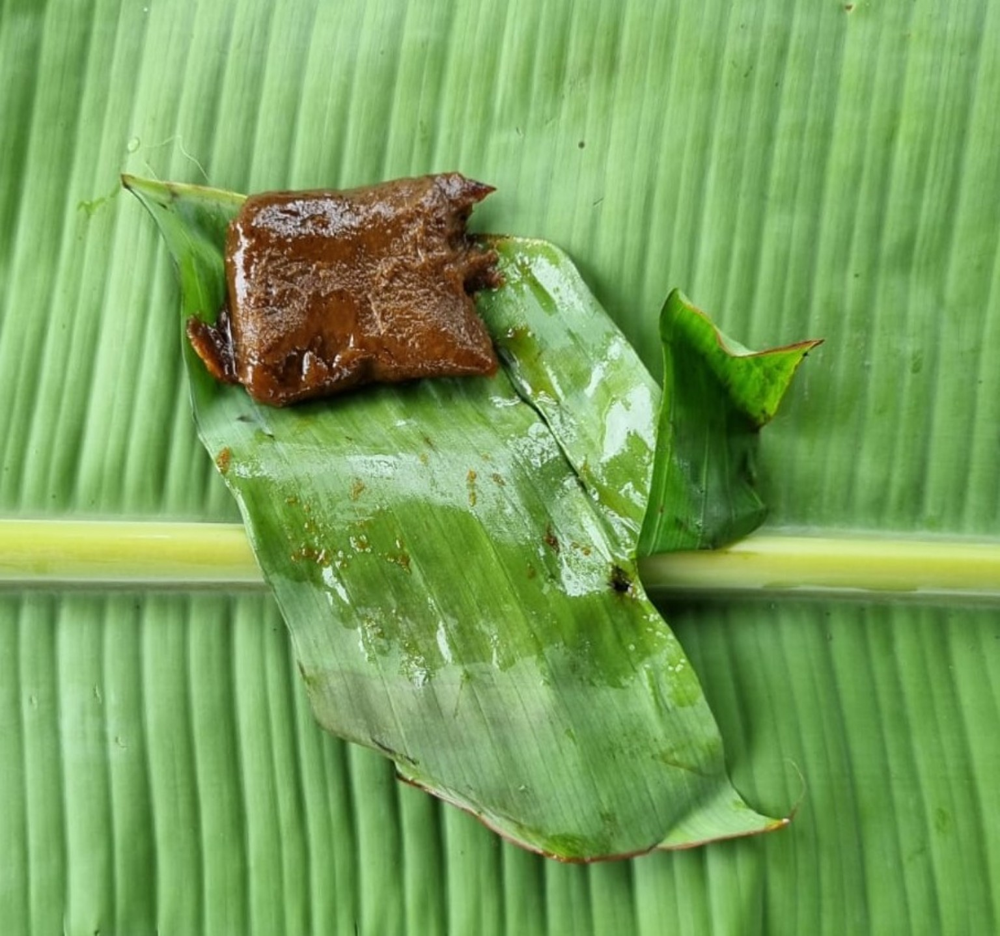
Presentado sobre una hoja de plátano.
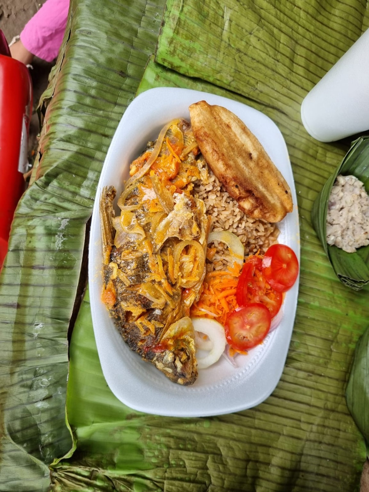
La hoja también forma parte de la presentación.
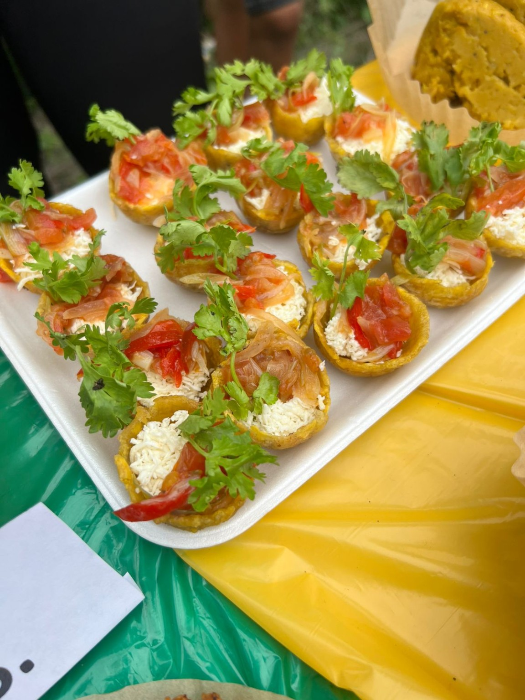
Bocados para compartir durante el festival.
Haz clic en cada lugar para descubrir qué sucede allí.
El ambiente del festival también se construye con creatividad y materiales inspirados en el plátano.
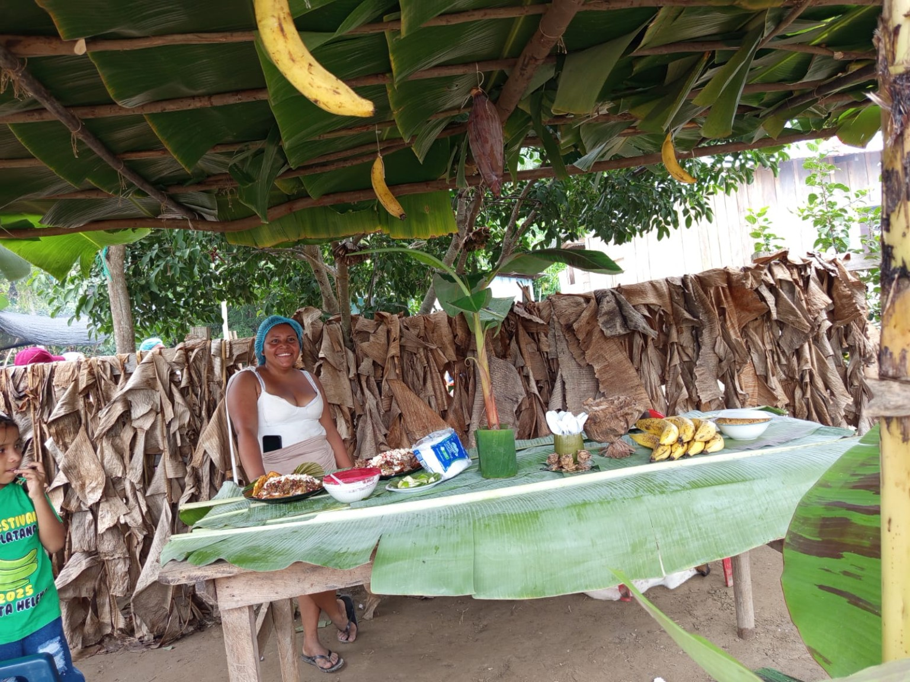
Las hojas de plátano pueden transformar los puestos y espacios del festival: sirven como paredes, techos, manteles y elementos decorativos.
Los trajes y accesorios del proyecto pueden inspirarse en formas de hojas, racimos y colores del cultivo.
Motivo principal de la decoración.
Vestuario campesino y creativo.
Fibras y elementos naturales.
Un recuerdo audiovisual de la celebración.
Ejemplo de programación para disfrutar un día de festival.
Inicio del festival y recorrido por las decoraciones.
Presentación de platos y preparaciones hechas a base de plátano.
Presentación de racimos, matas y productos del campo.
Danzas, música y actividades culturales.
Reconocimiento a participantes y despedida del festival.
Las hojas de plátano pueden utilizarse para decorar y presentar alimentos, algo que también se observa en las fotografías de este proyecto.
¡Pon a prueba tus conocimientos sobre el festival!
Haz clic sobre cualquier fotografía para verla más grande.
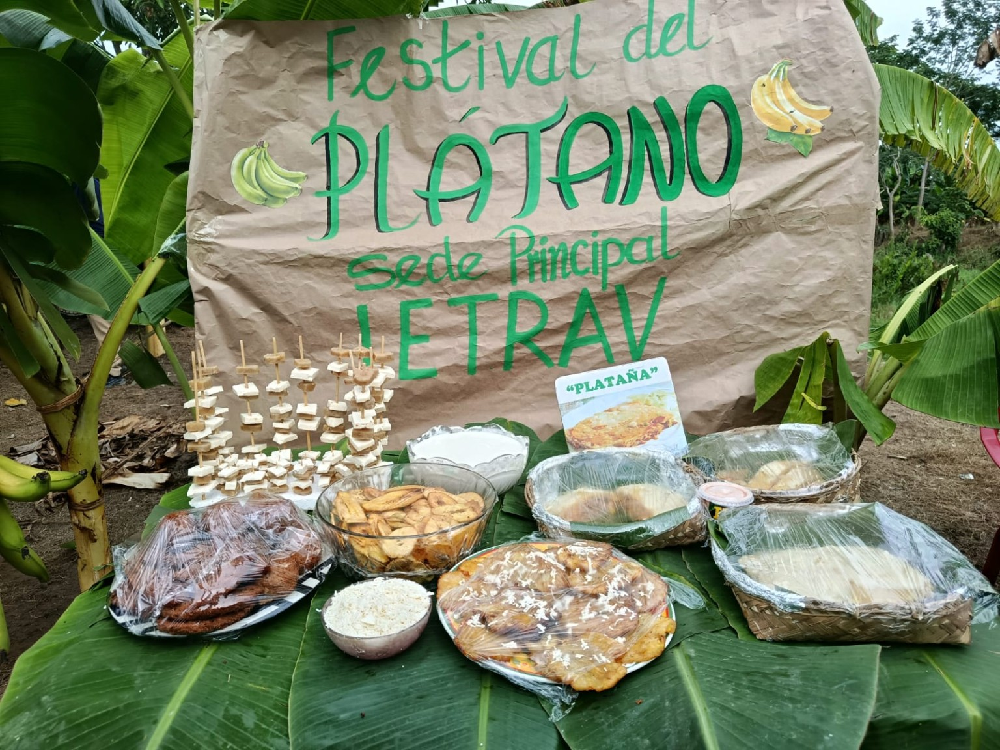
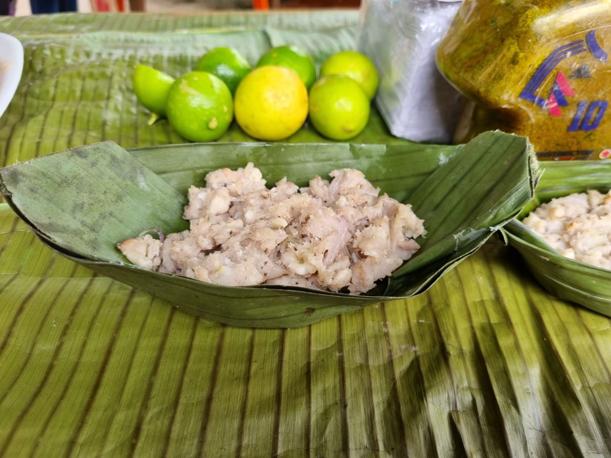
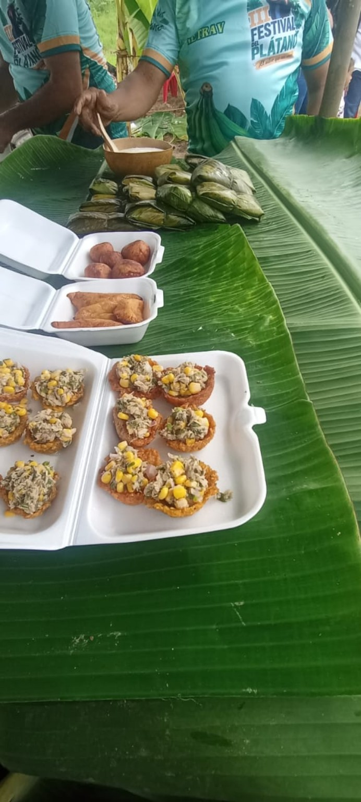
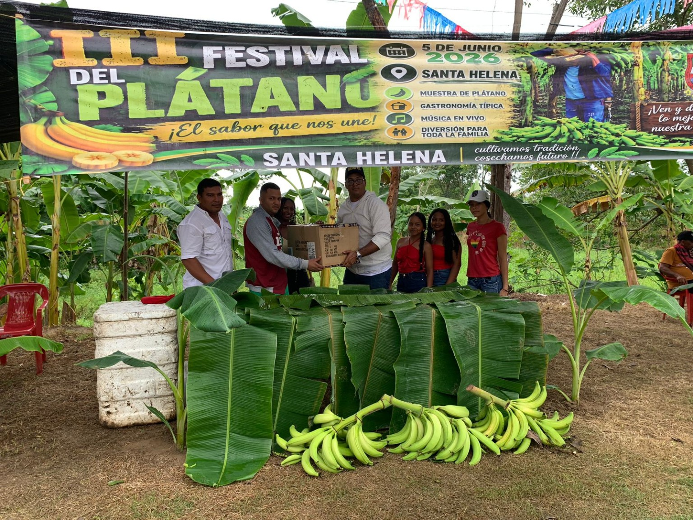
Déjanos un mensaje sobre el Festival del Plátano.